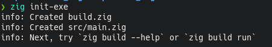

Zig is often given the label that it is the alternative to C, "the next generation of C".
The creator of zig is "Andrew Kelly" its first version was released in 2016 and has evolved exponentially to become one of the most desired languages in the world.
The zig programming language has attributes that make it a very attractive development tool.
- ✅ Minimalist
- ✅ Extremely fast
- ✅ Low level memory control
Zig, rather than managing memory directly, uses a function found in the standard library including allocators to provide a consistent interface for memory management. Zig is not a memory-safe language like Rust or Go, but it is not. It has no hidden memory allocations, which makes the code much more explicit and portable, because memory allocators can be easily swapped in the code to target different architectures, e.g. X86 ARM web assembly.
Therefore zig does not have a hidden control flow, if a function appears it is a function, there is no operator overloading and it does not even have exceptions, if a function fails it needs to return an explicit error value. The language also has a unique compile-time keyword that makes it important to run it at compile time. Zig requires no preprocessors or macros, and finally, zig can integrate well into a C or C++ codebase that supports cross-computation out of the box with LLVM.
Use Zig
You must download the official version of Zig, on its
website. then
create a new project with zig init-exe command.

In the main file the std standard library is first
imported and then a main function is defined. It details
how the function returns a !void, an empty type with an
exclamation point, that sign means the function may return an error.
const std = @import("std");
pub fn main() !void {
std.debug.print("Hello {s}\n", .{"World"});
}
Zig has more functionalities and I fell short in this post, but for more information and if you are interested in knowing more about zig, you can visit its learnig page
Zig also has communities in both Spanish and English, the latter being the largest.
If you made it this far, I thank you for reading my post, may God bless you.